Масштаб шрифтов сохранён. Ниже — исходное сравнение P1.1; актуальные исправления ширины, меню и восстановления показаны в конце. Скриншоты ACTUAL: 1440 × 900, изолированная SQLite-база визуальной проверки, все данные получены через Go API. Archive и Settings сравниваются с общей дизайн-системой: отдельных референсов для них не предоставлено.
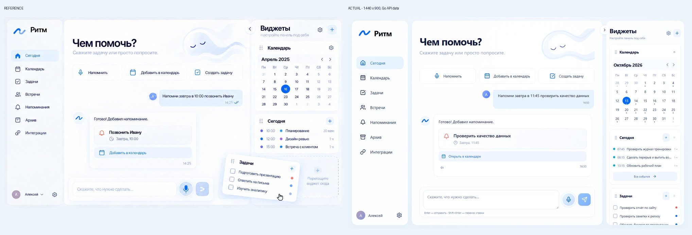
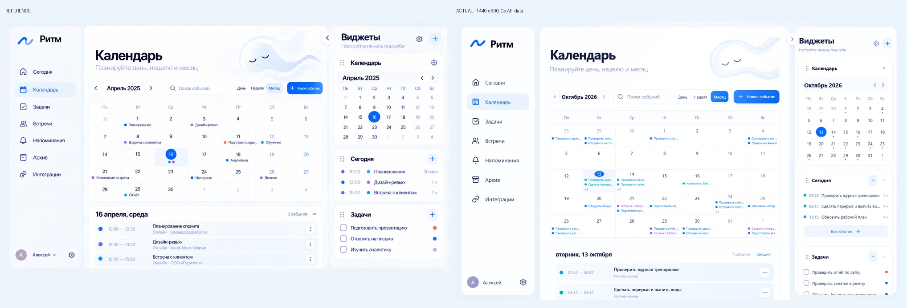
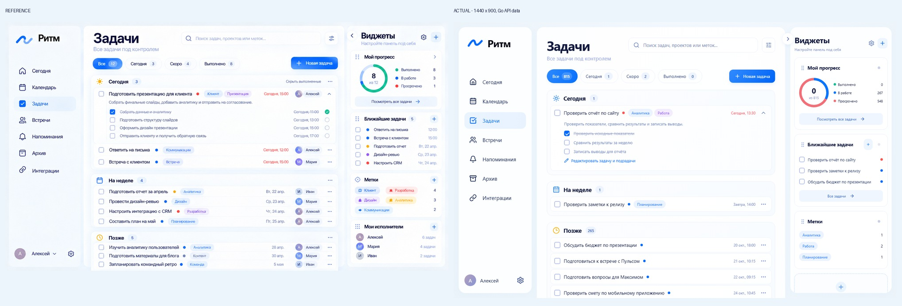
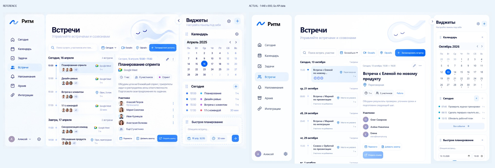
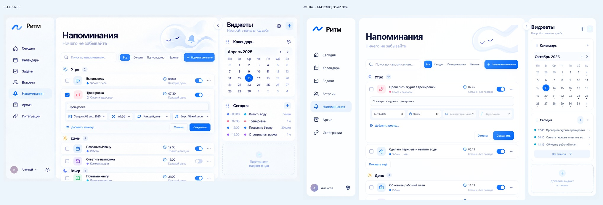
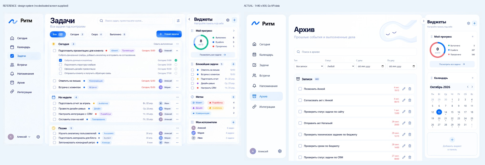
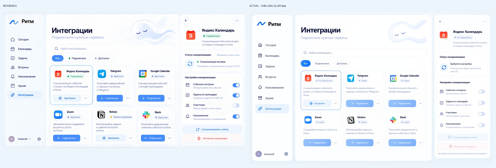
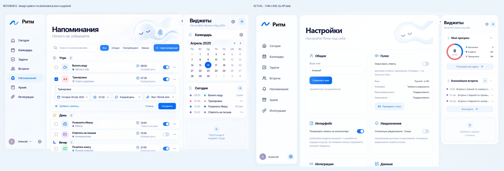
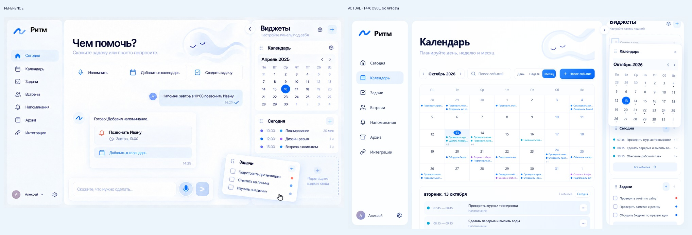
Меню слева, виджеты справа. При скрытых виджетах ограничивается только центральное содержимое. Скриншоты проверены в браузере с настоящим Go API.
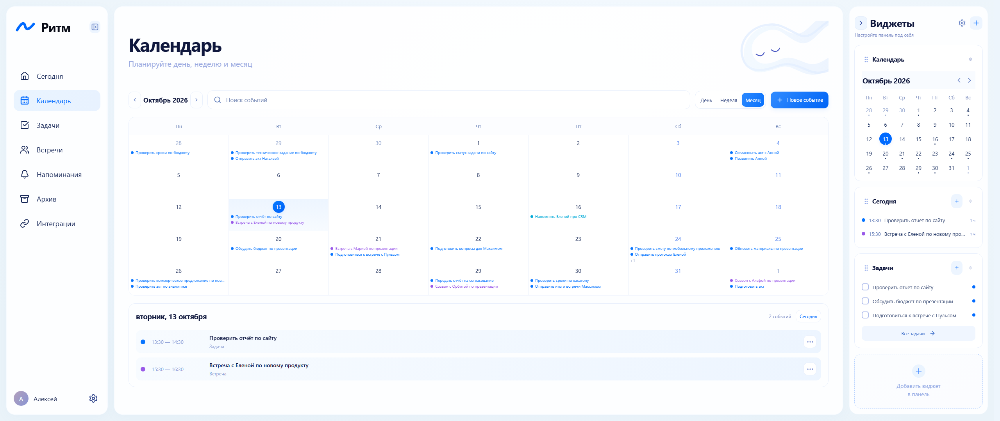
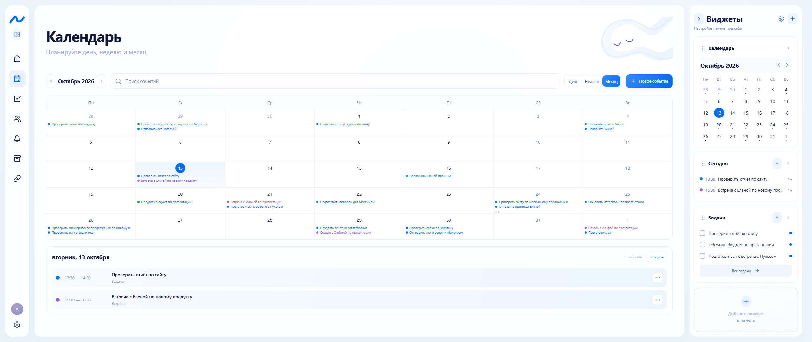
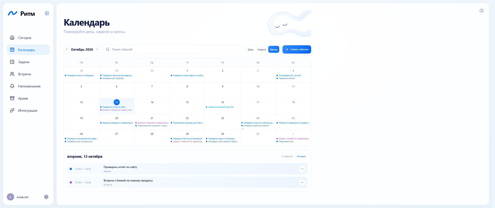
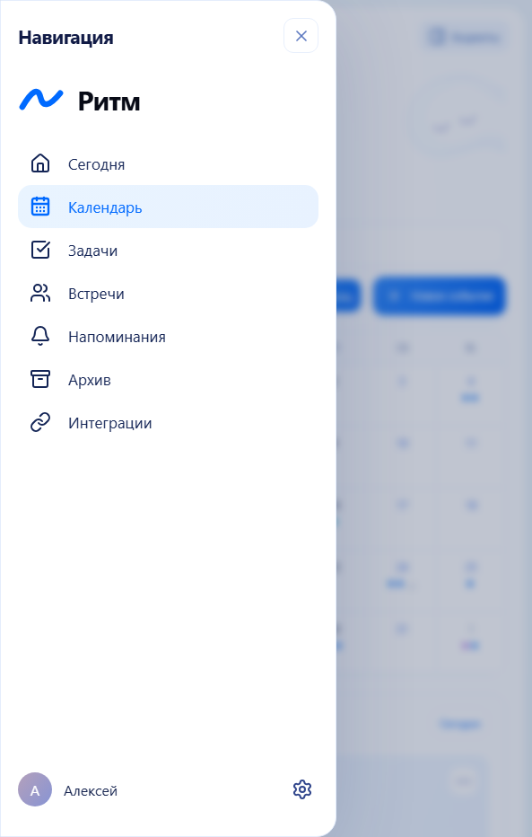
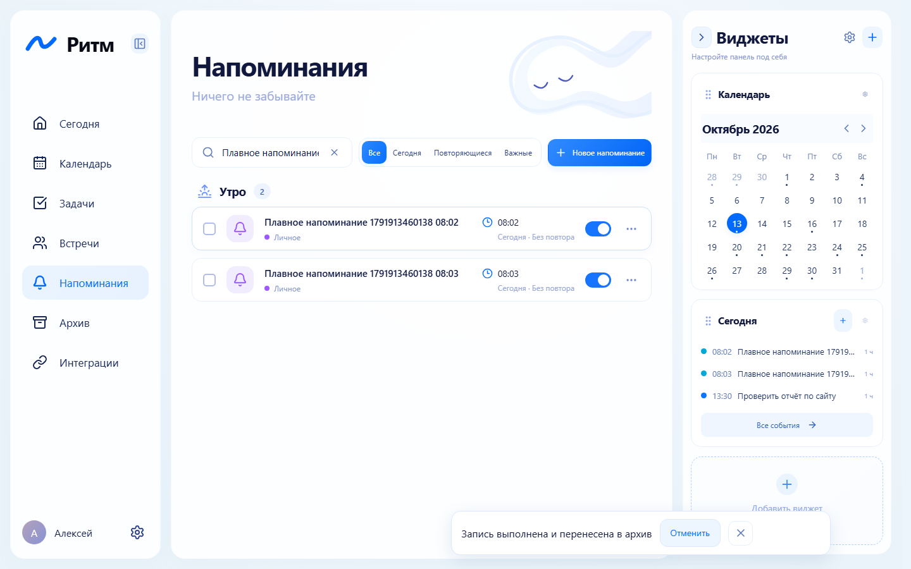
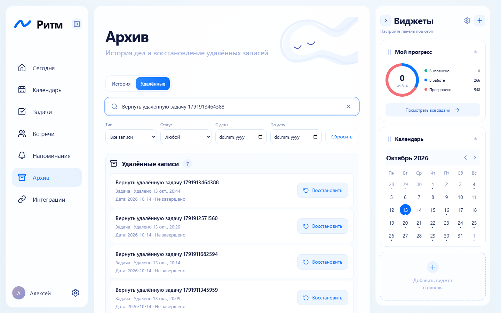
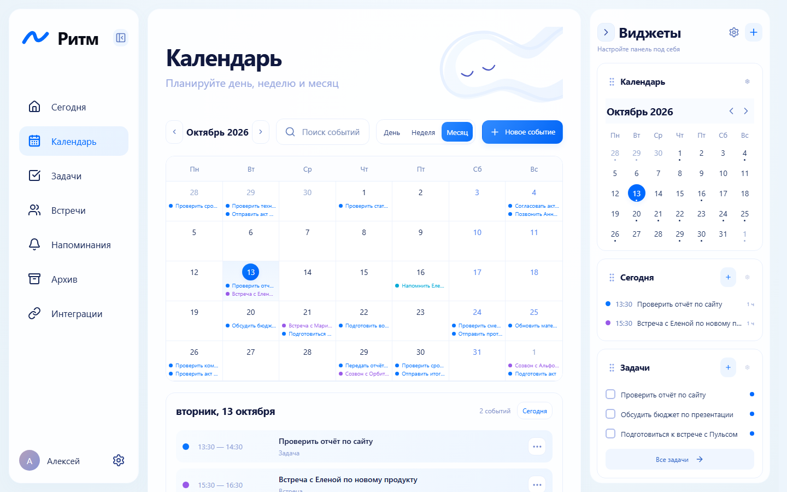
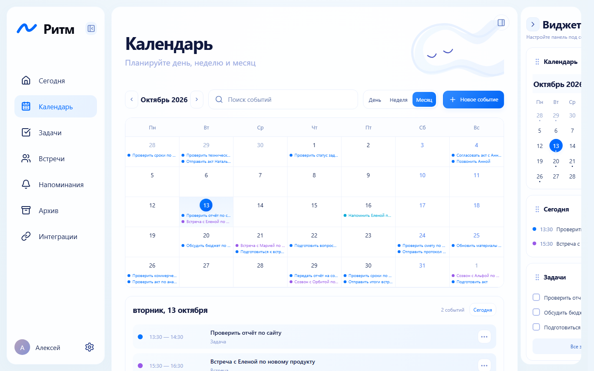